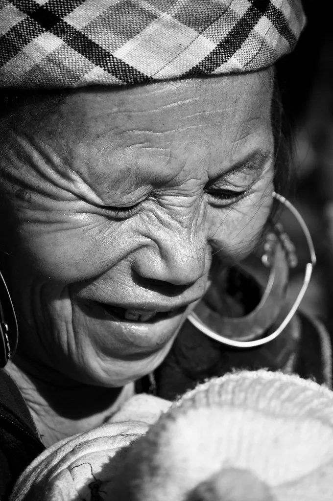
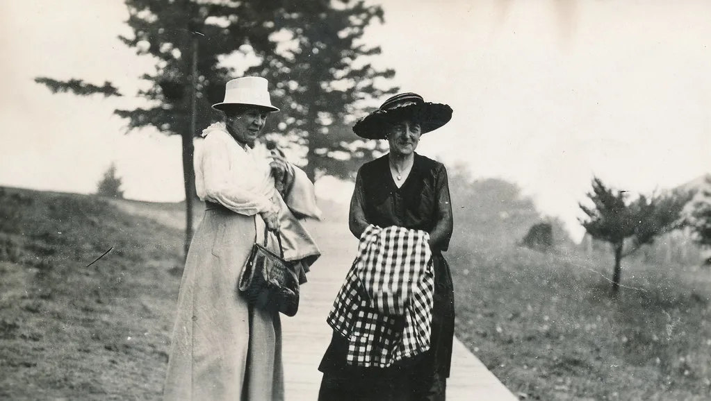

李대통령, 노인의 날 기념식 참석…"노인일자리 118만개, 간병비 건보 적용 추진"
이재명 대통령은 지난 2일 서울에서 열린 제30회 노인의 날 기념식에 참석해 저소득층 어르신을 대상으로 기초연금 지원을 더욱 두텁게 하고, 노인 일자리를 역대 최대 규모인 118만 개까지 확대하겠다고 밝혔다. 이날 행사에는 올해 100세를 맞은 장수 어르신들과 노인복지 유공자 등 400여 명이 참석해 의미를 더했다. 보건복지부와 대한노인회가 공동 주최한 이번 행사는 매년 10월 2일을 노인의 날로 기념해온 가운데, 30번째를 맞아 한층 뜻깊은 자리로 꾸려졌다.
이 대통령은 기념사에서 어르신들의 경험과 지혜를 존중해야 한다는 점을 강조하며, 고령층이 사회 안에서 지속적으로 역할을 할 수 있는 기반을 넓히는 데 정부 역량을 집중하겠다고 말했다. 특히 노인 일자리 확대 계획은 기존 규모를 뛰어넘는 역대 최대 수준으로 제시돼, 고령층 고용 정책의 무게가 한층 커졌다는 평가가 나온다. 정부는 공공형과 사회서비스형, 민간형 등 다양한 형태의 일자리 사업을 통해 고령층의 경제활동 참여를 늘려가겠다는 방향을 재확인한 것으로 풀이된다.

의료·돌봄 부담 완화 방안도 함께 제시됐다. 이 대통령은 비용 부담 때문에 필요한 치료를 미루거나 포기하는 사례가 없도록 간병비에 건강보험을 적용하는 방안을 추진하겠다고 밝혔다. 아울러 지역 단위의 돌봄 서비스를 확대해 고령층이 거주지에서 필요한 돌봄을 받을 수 있는 환경을 만들겠다는 구상도 내놨다. 간병비 부담은 그간 중증 질환을 앓는 고령층 가구의 경제적 어려움을 가중시키는 요인으로 꾸준히 지적돼 온 만큼, 이번 발표가 실제 정책으로 이어질지 주목된다. 특히 간병비 건강보험 적용은 그간 시민사회와 의료계 일각에서 지속적으로 요구해온 과제였던 만큼, 구체적인 적용 범위와 시행 시점이 향후 관심사로 떠오를 전망이다.
이날 행사에서는 특별한 축하 순서도 마련됐다. 이 대통령은 배우자인 김혜경 여사와 함께 올해 100세를 맞은 장수 어르신들에게 장수를 상징하는 청려장과 축하 카드를 직접 전달했다. 고령화가 빠르게 진행되는 한국 사회에서 노인의 날이 갖는 의미를 다시 환기시키는 자리가 됐다는 평가를 받으며, 참석자들 사이에서는 정부의 이번 발표가 실질적인 삶의 변화로 이어지길 바란다는 목소리도 나왔다.

이번 발표는 급속한 고령화 속에서 노후 소득과 돌봄 체계를 동시에 손봐야 한다는 사회적 요구가 커지는 가운데 나왔다. 저소득층 기초연금 강화와 노인 일자리 확대, 간병비 건강보험 적용 등은 모두 재정 부담이 수반되는 과제인 만큼, 구체적인 재원 조달 방안과 시행 시기는 추후 관계 부처 협의를 통해 확정될 것으로 보인다.
정부는 이번 기념식에서 밝힌 구상들을 뒷받침하기 위해 복지부를 중심으로 세부 실행 계획을 마련할 방침이라고 설명했다. 노인 일자리 확대와 간병비 지원 등이 실제 예산에 반영되기까지는 국회 심의 등 절차가 남아 있어, 향후 정기국회 예산 논의 과정에서 관련 정책의 구체적인 윤곽이 드러날 것으로 전망된다. 복지 전문가들은 고령 인구 비중이 계속 늘어나는 추세를 감안할 때, 일자리와 연금, 돌봄을 아우르는 종합적인 접근이 필요하다고 강조하며 이번 발표가 단발성 선언에 그치지 않고 지속적인 정책 추진으로 이어져야 한다고 지적한다.